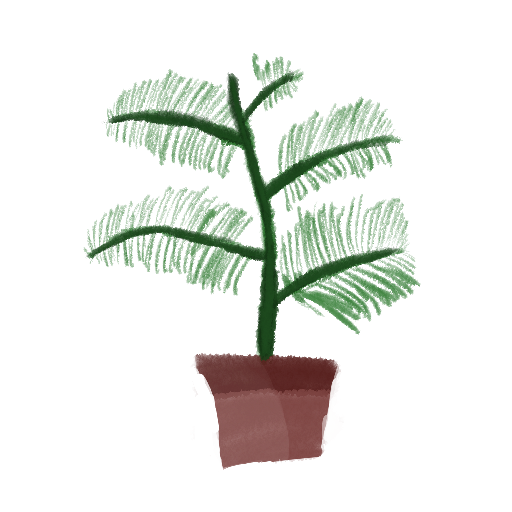
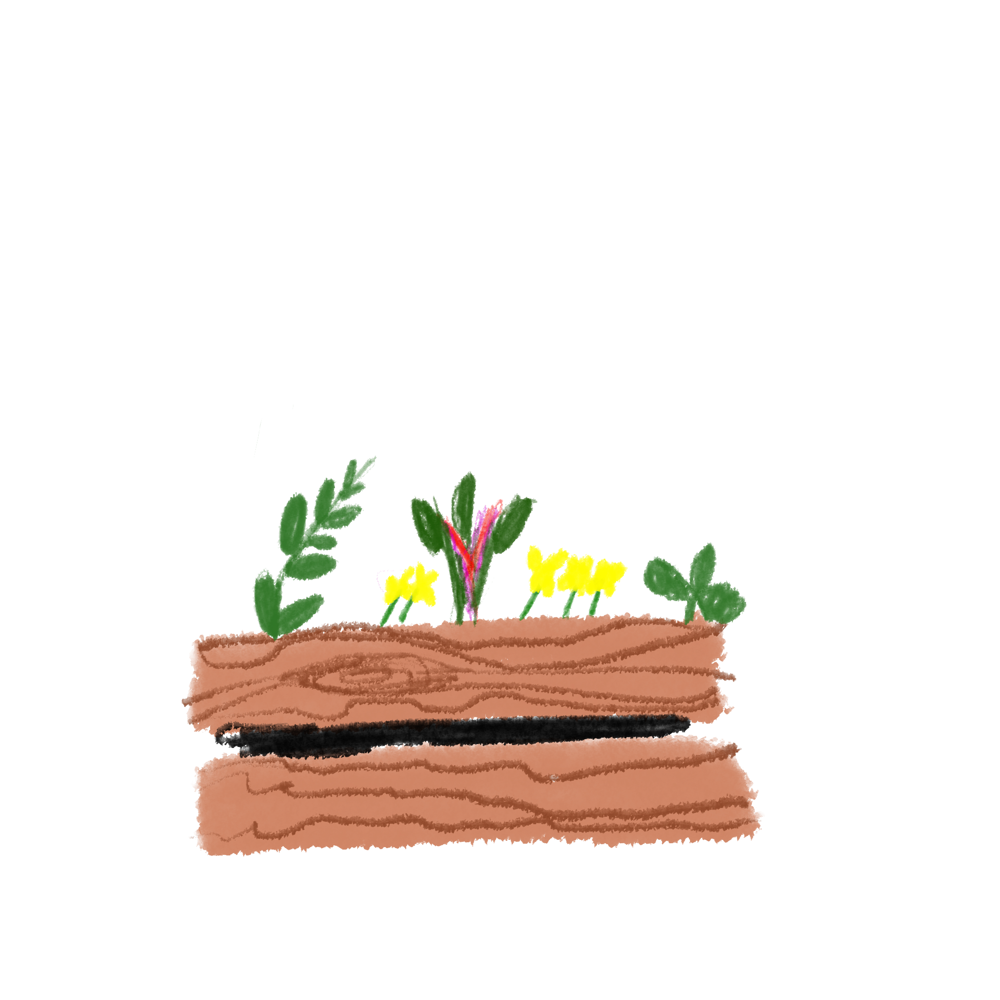
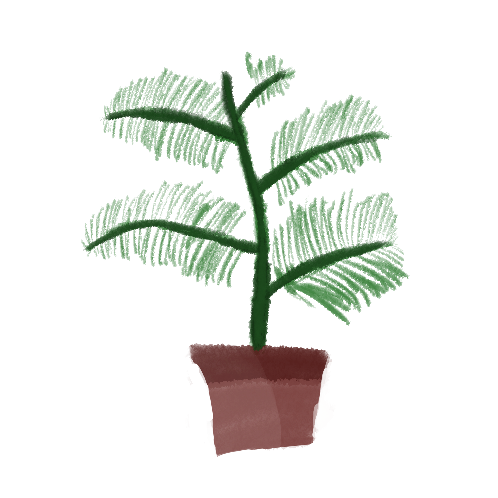
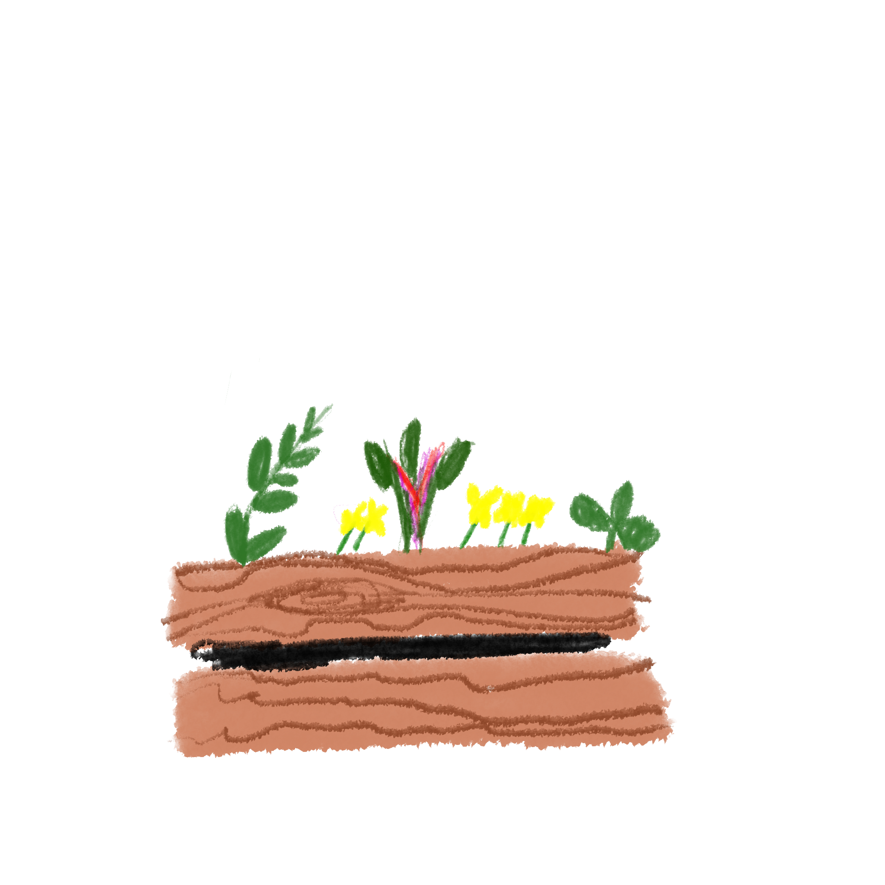

Let's Grow Clayton!
 



Come join us!
With 13 food deserts within Clayton County, about 25% of our residents suffer from food insecurity. To combat this, Let's Grow Clayton (LGC) holds an annual Sustanability and Agriculter Exhibition to promote and provide access to nutritious foods, services, and technologies that can improve the wellfare of Clayton County residents.